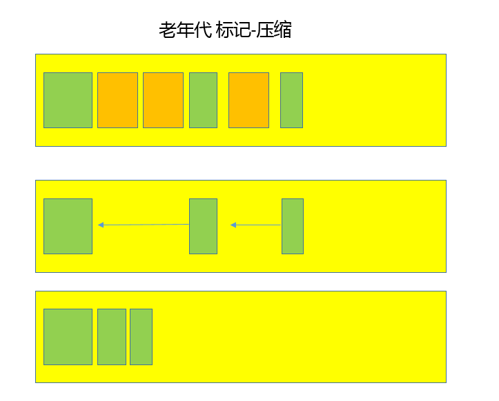

本文最后更新于：2020年10月7日 凌晨
文章对 JVM 做简单的涉猎。
JVM 内存分区
通常可以把 JVM 内存区域分为下面几个方面，其中，有的区域是以线程为单位，有的区域则是整个 JVM 进程唯一的。
程序计数器（PC，Program Counter Register）：在 JVM 规范中，每个线程都有它自己的程序计数器，并且任何时间一个线程都只有一个方法在执行，也就是所谓的当前方法。程序计数器会存储当前线程正在执行的 Java 方法的 JVM 指令地址；如果是在执行本地方法，则是未指定值（undefined）；
Java 虚拟机栈（Java Virtual Machine Stack）：早期也叫 Java 栈。每个线程在创建时都会创建一个虚拟机栈，其内部保存一个个栈帧（Stack Frame），对应着一次次的 Java 方法调用；
- 在一个时间点，只会有一个活动的栈帧，通常叫作当前帧，方法所在的类叫作当前类。如果在该方法中调用了其他方法，对应的新的栈帧会被创建出来，成为新的当前帧，一直到它返回结果或者执行结束。JVM 直接对 Java 栈的操作只有两个，就是对栈帧的压栈和出栈；
- 栈帧中存储着局部变量表、操作数（operand）栈、动态链接、方法正常退出或者异常退出的定义等。
堆（Heap）：Java 内存管理的核心区域，用来放置 Java 对象实例，几乎所有创建的 Java 对象实例都是被直接分配在堆上。堆被所有的线程共享，在虚拟机启动时，指定的 “Xmx” 之类参数就是用来指定最大堆空间等指标；
- 堆也是垃圾收集器重点照顾的区域，所以堆内空间还会被不同的垃圾收集器进行进一步的细分，最有名的就是新生代、老年代的划分；
方法区（Method Area）：所有线程共享的一块内存区域，存储元（Meta）数据，例如类结构信息，以及对应的运行时常量池、字段、方法代码等；
- 由于早期的 Hotspot JVM 实现，习惯称方法区为永久代（Permanent Generation）。Oracle JDK 8 将永久代移除，增加元数据区（Metaspace）；
运行时常量池（Run-Time Constant Pool）：方法区的一部分。反编译的类文件结构中有版本号、字段、方法、超类、接口等各种信息，还有一项信息就是常量池。Java 的常量池可以存放各种常量信息，包括编译期生成的各种字面量、运行时决定的符号引用等，所以它比一般语言的符号表存储的信息更加宽泛；
本地方法栈（Native Method Stack）：和 Java 虚拟机栈非常相似，支持对本地方法的调用，每个线程都会创建一个。在 Oracle Hotspot JVM 中，本地方法栈和 Java 虚拟机栈是在同一块儿区域，这取决于技术实现，未在规范中强制；
类加载
Java 通过引入字节码和 JVM 机制，提供了强大的跨平台能力，理解 Java 的类加载机制是深入 Java 开发的必要条件。一般来说，Java 的类加载过程分为三个主要步骤：加载、链接、初始化，具体行为在Java 虚拟机规范里有非常详细的定义。
- 首先是加载阶段，它是 Java 将字节码数据从不同的数据源读取到 JVM 中，并映射为 JVM 认可的数据结构（Class 对象），这里的数据源可能是各种各样的形态，如 jar 文件、class 文件，甚至是网络数据源等；如果输入数据不是 ClassFile 的结构，则会抛出 ClassFormatError；
- 加载阶段是用户参与的阶段，可以自定义类加载器，去实现自己的类加载过程；
- 第二阶段是链接，这是核心的步骤，简单说是把原始的类定义信息平滑地转化入 JVM 运行的过程中。这里可进一步细分为三个步骤：
- 验证：这是虚拟机安全的重要保障，JVM 需要核验字节信息是符合 Java 虚拟机规范的，否则就被认为是 VerifyError，这样就防止了恶意信息或者不合规的信息危害 JVM 的运行，验证阶段有可能触发更多 class 的加载；
- 准备：创建类或接口中的静态变量，并初始化静态变量的初始值。但这里的“初始化”和下面的显式初始化阶段是有区别的，侧重点在于分配所需要的内存空间，不会去执行更进一步的 JVM 指令；
- 解析：在这一步会将常量池中的符号引用替换为直接引用。在Java 虚拟机规范中，详细介绍了类、接口、方法和字段等各个方面的解析；
- 最后是初始化阶段：真正去执行类初始化的代码逻辑，包括静态字段赋值的动作，以及执行类定义中的静态初始化块内的逻辑，编译器在编译阶段就会把这部分逻辑整理好，父类型的初始化逻辑优先于当前类型的逻辑；
双亲委派模型
双亲委派模型，简单说就是当类加载器（Class-Loader）试图加载某个类型的时候，除非父加载器找不到相应类型，否则尽量将这个任务代理给当前加载器的父加载器去做。使用委派模型的目的是避免重复加载 Java 类型。
堆内部结构

- 新生代是大部分对象创建和销毁的区域，Java 应用中绝大部分对象生命周期都很短暂。其内部又分为 Eden 区域，作为对象初始分配的区域；两个 Survivor，有时候也叫 from、to 区域，被用来放置从 Minor GC 中保留下来的对象；
- JVM 会随意选取一个 Survivor 区域作为 “to”，然后会在 GC 过程中进行区域间拷贝，也就是将 Eden 中存活下来的对象和 from 区域的对象，拷贝到 “to” 区域。这样设计主要是为了防止内存的碎片化，并进一步清理无用对象；
- 大部分对象创建都是在Eden的，除了个别大对象外；
- Minor GC开始前，to-survivor是空的，from-survivor是由对象的；
- Minor GC后，Eden的存活对象都copy到to-survivor中，from-survivor的存活对象也复制to-survivor中。其中所有对象的年龄+1；
- from-survivor清空，成为新的to-survivor，带有对象的to-survivor变成新的from-survivor。重复回到步骤2；
- 从内存模型而不是垃圾收集的角度，对 Eden 区域继续进行划分，Hotspot JVM 还有一个概念叫做 Thread Local Allocation Buffer（TLAB），OpenJDK 衍生出来的 JVM 一般都提供了 TLAB 的设计。这是 JVM 为每个线程分配的一个私有缓存区域，否则多线程同时分配内存时，为避免操作同一地址，可能需要使用加锁等机制，影响分配速度，TLAB 仍然在堆上，它分配在 Eden 区域内。其内部结构比较直观易懂，start、end 是起始地址，top（指针）表示已经分配到哪里了。所以分配新对象，JVM 就会移动 top，当 top 和 end 相遇时，即表示该缓存已满，JVM 会试图再从 Eden 里分配一块；
- JVM 会随意选取一个 Survivor 区域作为 “to”，然后会在 GC 过程中进行区域间拷贝，也就是将 Eden 中存活下来的对象和 from 区域的对象，拷贝到 “to” 区域。这样设计主要是为了防止内存的碎片化，并进一步清理无用对象；
- 老年代放置长生命周期的对象，通常都是从 Survivor 区域拷贝过来的对象。不过也有特殊情况，普通的对象会被分配在 TLAB 上；如果对象较大，JVM 会试图直接分配在 Eden 其他位置上；如果对象太大，完全无法在新生代找到足够长的连续空闲空间，JVM 就会直接分配到老年代；
- 永久代这部分是早期 Hotspot JVM 的方法区实现方式，储存 Java 类元数据、常量池、Intern 字符串缓存，JDK 8 之后删除这部分；
JVM 堆的参数
利用 JVM 参数，设置堆和内部区域的大小：
最大堆体积
-Xmx value
初始的最小堆体积
-Xms value
老年代和新生代的比例，默认情况下，这个数值是 2，意味着老年代是新生代的 2 倍大；换句话说，新生代是堆大小的 1/3；
-XX:NewRatio = value
可以不用比例的方式调整新生代的大小，指定下面的参数，设定具体的内存大小数值；
-XX:NewSize = value
Eden 和 Survivor 的大小是按照比例设置的，如果 SurvivorRatio 是 8，那么 Survivor 区域就是 Eden 的 1/8 大小，也就是新生代的 1/10，因为 YoungGen=Eden + 2*Survivor，JVM 参数格式是
-XX:SurvivorRatio = value
垃圾收集
垃圾收集的原理
自动垃圾收集的前提是清楚哪些内存可以被释放。这一点可以结合 Java 类加载和内存结构思考。
主要涉及两个方面：1）最主要部分就是对象实例，都是存储在堆上的；2）方法区中的元数据等信息，例如类型不再使用，卸载该 Java 类是合理的；
对象实例收集主要使用两种基本算法，引用计数和可达性分析。
- 引用计数算法：为对象添加一个引用计数，记录对象被引用的情况，如果计数为 0，即表示对象可回收。这是很多语言的资源回收选择，例如Python，它同时支持引用计数和垃圾收集机制。根据场景择优使用，业界有大规模实践中仅保留引用计数机制，以提高吞吐量的尝试。Java 没有选择引用计数，因为其存在一个基本的难题，即很难处理循环引用关系；
- 可达性分析：Java使用这种方法。这种类型的垃圾收集通常叫作追踪性垃圾收集（Tracing Garbage Collection）。其原理简单来说，就是将对象及其引用关系看作一个图，选定活动的对象作为 GC Roots，然后跟踪引用链条，如果一个对象和 GC Roots 之间不可达，也就是不存在引用链条，那么可以认为是可回收对象。JVM 会把虚拟机栈和本地方法栈中正在引用的对象、静态属性引用的对象和常量，作为 GC Roots；
垃圾收集算法
对于常见的垃圾收集算法，做到总体上有个了解，理解相应的原理和优缺点。实际 GC 实现过程要复杂的多，目前还在发展中的前沿 GC 都是复合算法，并且并行和并发兼备。
复制（Copying）算法：新生代 GC 基本都是基于复制算法，将活着的对象复制到 to 区域，拷贝过程中将对象顺序放置，就可以避免内存碎片化。这么做的代价是，如果要进行复制，就要提前预留内存空间，有一定的浪费；另外，对于 G1 这种分拆成为大量 region 的 GC，复制而不是移动，意味着 GC 需要维护 region 之间对象引用关系，不管是内存占用方面还是时间上，都有一定的开销；
标记 - 清除（Mark-Sweep）算法：首先进行标记工作，标识出所有要回收的对象，然后进行清除。这么做除了标记、清除过程效率有限，另外就是不可避免的出现碎片化问题，这就导致其不适合特别大的堆；否则一旦出现 Full GC，暂停时间可能无法接受；
标记 - 整理（Mark-Compact）：类似于标记 - 清除，但为避免内存碎片化，它会在清理过程中将对象移动，以确保移动后的对象占用连续的内存空间。
垃圾收集器
Serial GC
最古老的垃圾收集器，“Serial” 体现在其收集工作是单线程的，并且在进行垃圾收集过程中，会进入臭名昭著的 “Stop-The-World” 状态。当然，其单线程设计也意味着精简的 GC 实现，无需维护复杂的数据结构，初始化也简单，所以一直是 Client 模式下 JVM 的默认选项。从年代的角度，通常将其老年代实现单独称作 Serial Old，它采用了标记 - 整理（Mark-Compact）算法，区别于新生代的复制算法。Serial GC 的对应 JVM 参数是：
-XX:+UseSerialGCCMS GC
Concurrent Mark Sweep GC 基于标记 - 清除（Mark-Sweep）算法，设计目标是尽量减少停顿时间，这一点对于 Web 等反应时间敏感的应用非常重要，至今仍然有很多系统使用 CMS GC。但是，CMS 采用的标记 - 清除算法，存在着内存碎片化问题，所以难以避免在长时间运行等情况下发生 full GC，导致恶劣的停顿。此外，既然强调了并发（Concurrent），CMS 会占用更多 CPU 资源，并和用户线程争抢。
Parallel GC
在早期 JDK 8 等版本中，它是 server 模式 JVM 的默认 GC 选择，也被称作是吞吐量优先的 GC。它的算法和 Serial GC 比较相似，尽管实现要复杂的多，其特点是新生代和老年代 GC 都是并行进行的，在常见的服务器环境中更加高效。开启选项是：
-XX:+UseParallelGC另外，Parallel GC 引入了开发者友好的配置项，可以直接设置暂停时间或吞吐量等目标，JVM 会自动进行适应性调整，例如下面参数：
-XX:MaxGCPauseMillis=value
-XX:GCTimeRatio=N // GC时间和用户时间比例 = 1 / (N+1)G1 GC
一种兼顾吞吐量和停顿时间的 GC 实现，是 Oracle JDK 9 以后的默认 GC 选项。G1 可以直观的设定停顿时间的目标，相比于 CMS GC，G1 未必能做到 CMS 在最好情况下的延时停顿，但是最差情况要好很多。
G1 GC 仍然存在着年代的概念，但是其内存结构并不是简单的条带式划分，而是类似棋盘的一个个 region。Region 之间是复制算法，但整体上实际可看作是标记 - 整理（Mark-Compact）算法，可以有效地避免内存碎片，尤其是当 Java 堆非常大的时候，G1 的优势更加明显。G1 吞吐量和停顿表现都非常不错，并且仍然在不断地完善。与此同时，CMS 已经在 JDK 9 中被标记为废弃（deprecated），所以 G1 GC 值得你深入掌握。
垃圾收集过程的理解
在垃圾收集的过程，Eden、Survivor、Tenured 等区域的变化取决于具体的 GC 方式，需要了解通常的垃圾收集的流程。
Java 应用不断创建对象，通常都是分配在 Eden 区域，当其空间占用达到一定阈值时，触发 minor GC。仍然被引用的对象（绿色方块）存活下来，被复制到 JVM 选择的 Survivor 区域，而没有被引用的对象（黄色方块）则被回收。注意，存活对象标记了“数字 1”，这是为了表明对象的存活时间；

经过一次 Minor GC，Eden 就会空闲下来，直到再次达到 Minor GC 触发条件，这时候，另外一个 Survivor 区域则会成为 to 区域，Eden 区域的存活对象和 From 区域对象，都会被复制到 to 区域，并且存活的年龄计数会被加 1；

类似第二步的过程会发生很多次，直到有对象年龄计数达到阈值，这时候就会发生所谓的晋升（Promotion）过程，如下图所示，超过阈值的对象会被晋升到老年代。这个阈值是可以通过参数指定：
-XX:MaxTenuringThreshold=<N>
后面就是老年代 GC，具体取决于选择的 GC 选项，对应不同的算法。下面是一个简单标记 - 整理算法过程示意图，老年代中的无用对象被清除后， GC 会将对象进行整理，以防止内存碎片化。

通常把老年代 GC 叫作 Major GC，对整个堆进行清理的操作叫作 Full GC，但是这个也没有那么绝对，因为不同的老年代 GC 算法其实表现差异很大，例如，对于 CMS，“concurrent” 就体现在清理工作是与工作线程一起并发运行的。
GC 仍然处于飞速发展之中，目前的默认选项 G1 GC 在不断的进行改进，原来的很多缺点，例如串行的 Full GC、Card Table 扫描的低效等问题，都已经被大幅改进，比如，在 JDK 10 以后，Full GC 已经是并行运行，很多场景下其表现还略优于 Parallel GC 的并行 Full GC 实现。
即使是 Serial GC，虽然比较古老，但是其简单的设计和实现未必就是过时的，它本身的开销，不管是 GC 相关数据结构的开销，还是线程的开销，都非常小。随着云计算的兴起，在 Serverless 等新的应用场景下，Serial GC 有了新的应用。
对于 CMS GC，因为其算法的理论缺陷等原因，虽然现在还有非常大的用户群体，但是已经被标记为废弃，如果没有组织主动承担 CMS 的维护，很有可能会在未来版本移除。
垃圾收集调优
调优是针对特定场景、特定目的的，对于 GC 调优，首先要明确调优的目标。从性能的角度看，通常关注三个方面：内存占用（footprint）、延时（latency）和吞吐量（throughput）。大多数情况下调优会侧重于其中一个或者两个方面的目标，很少有情况可以兼顾三个不同的角度。当然，也可能需要考虑其他 GC 相关的场景，例如，1）OOM 可能与不合理的 GC 参数有关；2）对应用启动速度方面的有特定的需求。
基本的调优思路和步骤可以总结为：
理解应用需求和问题，确定调优目标。假设开发了一个应用服务，但发现偶尔会出现性能抖动，出现较长的服务停顿。评估用户可接受的响应时间和业务量，将目标简化为，希望 GC 暂停尽量控制在 200ms 以内，并且保证一定标准的吞吐量；
掌握 JVM 和 GC 的状态，定位具体的问题，确定真的有 GC 调优的必要。具体有很多方法，比如，通过 jstat 等工具查看 GC 等相关状态，可以开启 GC 日志，或者是利用操作系统提供的诊断工具等。例如，通过追踪 GC 日志，查找是不是 GC 在特定时间发生了长时间的暂停，进而导致了应用响应不及时；
思考选择的 GC 类型是否符合应用特征，如果是，具体问题表现在哪里，是 Minor GC 过长，还是 Mixed GC 等出现异常停顿情况；如果不是，考虑切换到什么类型，如 CMS 和 G1 都是更侧重于低延迟的 GC 选项；
通过分析确定具体调整的参数或者软硬件配置；
验证是否达到调优目标，如果达到目标，即可以考虑结束调优；否则，重复完成分析、调整、验证这个过程；
OutOfMemoryError
通俗来说 OOM 就是 JVM 内存不够用了。Javadoc 对 OutOfMemoryError 的解释是：没有空闲内存，并且垃圾收集器也无法提供更多内存。这隐含着一层意思：在抛出 OutOfMemoryError 之前，通常会触发垃圾收集器，尽其所能去清理出空间，例如：
引用机制分析中说到的 JVM 会去尝试回收软引用指向的对象等；
在 java.nio.BIts.reserveMemory() 方法中，能看到 System.gc() 会被调用，以清理空间。这也是为什么大量使用 NIO 的 Direct Buffer 时，通常不加下面的参数，毕竟是个最后的尝试，有可能避免一定的内存不足问题；
-XX:+DisableExplicitGC
也不是任何情况下垃圾收集器都会被触发，比如分配一个超大对象，比如一个大数组，超过堆的最大值，JVM 可以判断出垃圾收集并不能解决这个问题，所以直接抛出 OutOfMemoryError。除了程序计数器，其他区域都有可能会因为可能的空间不足发生 OutOfMemoryError，简单总结如下：
堆内存不足是最常见的 OOM 原因之一，抛出的错误信息是 “java.lang.OutOfMemoryError: Java heap space”，原因可能千奇百怪，例如：1）可能存在内存泄漏问题；2）可能是堆的大小不合理，比如要处理比较大的数据量，但是没有显式指定 JVM 堆大小或者指定数值偏小；2）JVM 处理引用不及时，导致堆积起来，内存无法释放等；
Java 虚拟机栈和本地方法栈：如果程序不断的进行递归调用，没有退出条件，就会导致不断地进行压栈。类似这种情况，JVM 会抛出 StackOverFlowError；如果 JVM 试图去扩展栈空间的时候失败，则会抛出 OutOfMemoryError；
老版本的 Oracle JDK 中，永久代的大小是有限的，并且 JVM 对永久代垃圾回收（如常量池回收、卸载不再需要的类型）不积极，所以在不断添加新类型的时候，永久代出现 OutOfMemoryError 也比较多见，尤其是在运行时存在大量动态类型生成的场景；类似 Intern 字符串缓存占用太多空间，也会导致 OOM 问题。对应的异常信息，会标记出来和永久代相关：“java.lang.OutOfMemoryError: PermGen space”；
元数据区引入之后，方法区内存已经不再那么窘迫，相应的 OOM 有所改善，出现 OOM 后异常信息变成了：“java.lang.OutOfMemoryError: Metaspace”；
直接内存不足，也会导致 OOM；
自测题
问：进程和线程的关系，哪些资源是私有的，哪些是公有的
答：
问：JVM 中的常量池放在哪，元空间和永久代
答：
问：简单说说 Java Object 的方法
答：
问：new 一个对象的过程，简单说说对象创建到消亡的过程。
答：
问：详细说说类加载的过程，静态代码块执行在哪个阶段。
答：
问：说一说打破双亲委托机制原理，以及常用场景。
答：
问：如何判断一个对象需要回收。
答：
问：GC 工作原理，简单说说 CMS 和 G1，比较 CMS 和 G1。
答：
问：如果对象大部分都是存活的，少部分需要清除，应当用什么算法。
答：
问：说说Minor GC，Full GC。
答：针对 HotSpot VM的实现，GC 分两种:
- Partial GC：不收集整个 GC 堆
- Young GC: 只收集young gen的GC，Young GC还有种说法就叫做 “Minor GC”
- Old GC: 只收集old gen的GC。只有垃圾收集器CMS的concurrent collection 是这个模式
- Mixed GC: 收集整个young gen 以及部分old gen的GC。只有垃圾收集器 G1有这个模式
- Full GC：收集整个堆，包括 新生代，老年代，永久代（JDK 1.8及以后，永久代被移除，换为metaspace 元空间）等所有部分的模式。
注：详细内容可以参照JVM 系列文章之 Full GC 和 Minor GC
问：JVM 问题的排查工具有哪些。
答：
参考资料
Java 核心技术精讲 - 极客时间
本博客所有文章除特别声明外，均采用 CC BY-SA 4.0 协议 ，转载请注明出处！